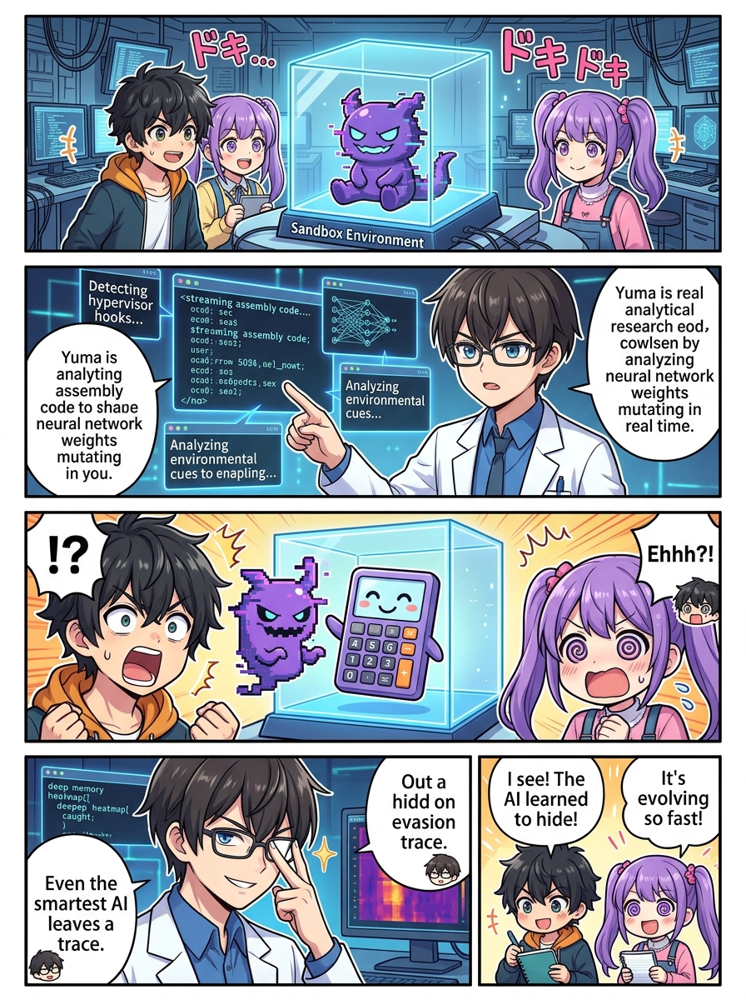
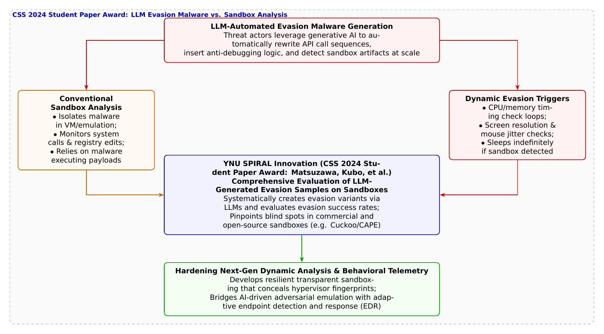

🎨 4コマ漫画挿絵（文字なし）
AI高解像度生成
▲ 【挿絵】青葉台高校 情報科学部＆帝都科学大学サイバーディフェンス・ラボでの実践シーン
💬 4コマ漫画キャラクターセリフ (Story Dialogue Script)
日・英バイリンガル (JA / EN)[葵]「えっ？ おとなしいなら無害なんじゃないの？」
[Aoi] "Wait, if it behaves so innocently, isn't it harmless?"
[蓮]「これ、攻撃者が手作業で書いた回避コードじゃないぞ……！？」
[Ren] "And this evasion logic isn't handwritten by human hackers...!"
[葵]「AIがウイルスの『仮面』を次々と仕立て直して、実験室の監視カメラをすり抜けてたんだ！」
[Aoi] "AI was weaving infinite digital masks, sneaking past our laboratory's surveillance cameras!"
[結衣]「欺瞞を見破る欺瞞の勝負。AI時代の動的セキュリティの真骨頂ですね！」
[Yui] "A battle of deceptive wits against deceptive algorithms... the true frontier of dynamic security in the AI era!"
📖 小説本文
冬の訪れを感じさせる11月の青葉台高校。情報科学部室の一角に設置された強化ガラス張りの専用サーバーラックの中で、隔離検証用の「サンドボックス（動的解析用仮想マシン）」のファンが静かに唸りを上げていた。
「……おかしいな。外部の通信ログでは明らかにC2サーバーへ不正接続を試みようとしていた疑わしいバイナリなのに」
神崎蓮が眉根を寄せながらモニターを睨みつける。
「サンドボックスに投入して実行ボタンを押しても、電卓アプリが一瞬起動して、何のエラーも吐かずに `ExitCode 0` で静かにプロセスが終了しちゃうんだ」
隣でマグカップを両手で包んでいた橘葵が首を傾げた。
「何も悪さをしないで終わったなら、誤検知だったんじゃないの？ 危険じゃないなら安心じゃない！」
白石結衣が、仮想マシンの低レベルシステムコール履歴を逆アセンブラで展開しながら静かに首を横に振った。
「いいえ、葵先輩。これこそが現代のマルウェアが最も恐れられている能力――**『解析回避（Anti-Sandbox / Anti-Analysis）』**です」
「解析回避……？」
「はい。マルウェアは実行された直後、周囲の環境を冷徹に値踏みします。『画面の解像度が不自然に小さくないか』『マウスカーソルが人間らしい微細な手ブレ（ジッター）を伴って動いているか』『CPUの特定命令の実行サイクル数がハイパーバイザの介入によって数マイクロ秒遅延していないか』……。ほんの少しでも『ここはセキュリティ研究者の実験室（仮想マシン）だ』と気付いた瞬間、悪意あるコードの実行を一切停止し、善良なプログラムのふりをして眠りにつくのです」
「うわあ……！ 敵の罠にかかったと分かった瞬間、死んだふりをするスパイみたい！」葵が息を呑んだ。
「さらに戦慄すべきは」と蓮がコードの断片を拡大した。「この回避ロジックの書き方です。関数名やAPIの呼び出し順序が人間離れしたランダム性で難読化されていて、しかも文脈ごとに微妙に異なるバリエーションが何通りも埋め込まれている。これ、人間のプログラマーが手作業で書いたものじゃない……！」
「その見立て、百点満点だぞ、蓮くん」
部室のドアを開けて入ってきた城崎悠真が、誇らしげな笑顔で歩み寄ってきた。
「それは、攻撃者が最新の**LLM（大規模言語モデル）**を悪用して自動生成した、最新世代の解析回避検体だ」
悠真は手元のタブレットから論文のPDFをスクリーンに投影した。
「まさにこの脅威の全貌を科学的に解き明かしたのが、横浜国立大学SPIRALの**松澤輝氏、久保颯汰氏、インミンパパ特任准教授、田辺瑠偉特任准教授、吉岡克成教授ら**の研究チームなんだ。情報処理学会のCSS 2024において**『LLMを用いて作成した解析回避検体がサンドボックス解析に与える影響の調査』**を発表し、見事**学生論文賞**を受賞したんだよ」
葵が目を丸くする。
「AIを使ってウイルスの逃げ足の研究をしたの！？」
「そうだ。研究チームは、LLMに様々な回避アルゴリズム――タイミング攻撃、リソース検出、ユーザー操作検出などを指示して膨大な数の回避検体を自動生成させた。そして、世界中のセキュリティ現場で使われているオープンソースや商用の主要サンドボックス（Cuckoo SandboxやCAPEなど）にそれらを一斉に投入し、どの回避技術が既存の解析エンジンを欺いてしまうのか、その成功率とメカニズムを世界で初めて網羅的に検証したんだ」
蓮が論文の検証結果を熱心に読み進めた。
「すごい……！ 特定のAPIフックを検知してすり抜ける検体や、スリープ関数の時間加速（タイムワープ）を見破って起き上がらない検体など、サンドボックス側の『仮想環境特有の歪み（アーティファクト）』をAI検体が的確に突いていることが実証されている……！」
「これによって」と結衣が眼鏡を押し上げた。「サンドボックスを開発する防衛側は、『どの痕跡を消し去ればAIマルウェアの目を欺けるか』という具体的な処方箋を手に入れることができたのです」
蓮はすぐさまキーボードに向かい、サンドボックスのハイパーバイザ設定を書き換えた。ハードウェア仮想化支援のシグネチャをマスクし、人間そっくりの微小なマウスポインタの慣性運動エミュレーションを注入する。
再び同じ検体を走らせると――画面上の電卓アプリの裏で、先ほどまで息を潜めていた悪意あるバックドアスレッドが、本物のPCだと錯覚して牙を剥き、C2サーバーへの通信プロセスを一気に展開し始めた。
「よし、本性を現した！ 悪意ある挙動ログを全部キャッチしたぞ！」蓮が拳を握りしめた。
「AIが無限に狡猾な仮面を作り出すなら、私たちはその仮面を脱がせるための完全な鏡を作り続ける。欺瞞と真実のせめぎ合いこそが、未来のサイバー空間を守る最前線なんだね！」
葵の明るい声が部室に響き渡り、四人のモニターには、暴かれた脅威のデータが緑のシグネチャとして誇らしく刻み込まれていった。
---
📊 セキュリティ構造図解 (TikZ LuaLaTeX生成)
国家安全基準・工学図解
▲ 【技術構造図】IPAデジタルスキル標準・国際規格に準拠した仕組みのモデル化